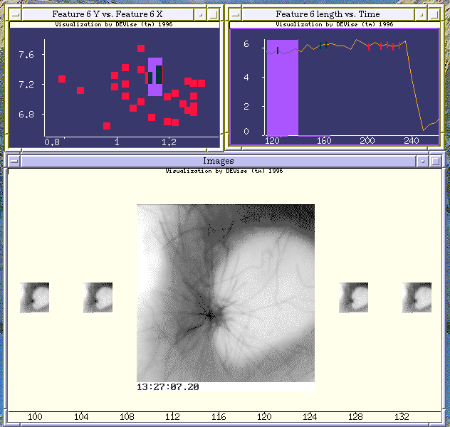

Cell Image Set Example

Input Data
The input data:
- are images of a cell collected as it grows.
- contain attributes: elapsed time, and the position and size of various
features in the image.
The input file looks like:
178.18 0.0 0.0 0.0 2.71 14.36 11.65 0.0 0.0 0.0
1.42 8.49 7.07 1.35 2.87 1.52 1.03 7.21 6.18 0.0
0.0 0.0 0.0 0.0 0.0 0.0 0.0 0.0 0.0 0.0
0.0 /p/devise/dat/molbio/image.24
183.78 0.0 0.0 0.0 2.75 12.6 9.85 0.0 0.0 0.0
1.32 8.24 6.92 1.32 3.03 1.71 1.32 7.22 5.9 0.0
0.0 0.0 0.0 0.0 0.0 0.0 0.0 0.0 0.0 0.0
0.0 /p/devise/dat/molbio/image.25
...
Problem
We want to select an image or images to view according to the values
of certain attributes associated with the images.
Visualization
Click here to see our model of creating
visualizations.
The visualization is created as follows:
- Define the 'Feature 6 Y vs. Feature 6 X' window. This shows the location
of one of the features that showed up in a large number of the images.
- Define a window (hidden) that serves as the source for the X-Y cursor in
the first window.
- Define the 'Feature 6 length vs. Time' window. This window consists
of two 'piled' views. One view (the continuous line) shows Feature 6
length vs. Time for all records in the data. The second view (the red
bars) has a record link to the cursor source view, so it only shows those
records that intersect the cursor in the first view.
- The 'Images' window also consists of two piled views. One view is
the source for the X cursor in the 'Feature 6 length vs. Time' window.
This means that the limits on the X axis will change in response to
a change in the position of the cursor in the 'Feature 6 length vs. Time'
window. The view showing the small images simply displays all images
that fit in the time range of this window. The view displaying the large
image also has a record link to the source of the cursor in the upper
left window, so only those images corresponding to the records selected
by the cursor in that window will be displayed in the large size in the
'Images' window.
Observations
The large image displayed in the lower window is the result of a two-
stage selection. First, the cursor in the upper left window selects
a set of records based on their values for Feature 6 X and Y; then
the cursor in the upper right window selects one of these records based
on its value of Time.
Back to DEVise home page.